O que é o Sistema ICODE?
O Sistema ICODE é um gerenciador de conteúdos dos colegiados do IC, incluindo:
- Congregação
- Conselho Interdepartamental (CI)
- Departamento de Sistema de Computação (DSC)
- Departamento de Sistemas de Informação (DSI)
- Departamento de Teoria de Computação (DTC)
- Comissão Diretora de Informática (CDI)
O ICODE é um CMS (Sistema Gerenciador de Conteúdo) construído com tecnologias modernas:
Os principais objetivos desta nova versão são:
- Modernizar a interface do sistema
- Melhorar significativamente a experiência do usuário
- Solucionar problemas de links quebrados de documentos anexados
- Facilitar o acesso e gerenciamento de documentos institucionais
- Aprimorar a indexação de documentos PDF
- Integrar IA para pesquisa de documentos
- Simplificar o código fonte
Acesso ao Sistema
O acesso ao ICODE é restrito e requer autenticação. O usuário pode fazer login utilizando:
- Contas Unicamp ou DAC (Utilizando o sistema SISE de autenticação central)
- Conta IC (Através do LDAP interno)
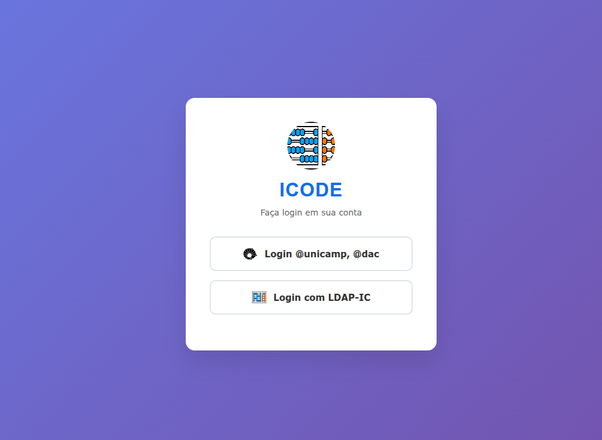
Figura 1: Tela de login do sistema ICODE
Perfil do Usuário
Após o login, o usuário será redirecionado para a página de perfil, que contém:
- Nome
- Sobrenome
- E-Mail
- Papel (assinante, editor ou administrador)
- Membro (Qual colegiado o usuário tem acesso ao conteúdo, podendo ser: congrega, ci, dsc, dsc, dsi e cdi)
- Subcategoria Membro de Posts Privados (Acesso a posts privados ainda não publicados de determinados colegiados)
- Subcategoria Membro de Arquivos Privados (Acesso a arquivos privados de determinados colegiados)
Atribuição Automática de Permissões
O sistema é totalmente automatizado - ao fazer login, o usuário é automaticamente designado para:
- Um papel específico
- Colegiados os quais o acesso é liberado, de acordo com sua função e cadastro na intranet.ic.unicamp.br
Todos os usuários têm acesso às páginas públicas da Congregação e CI, presentes no menu lateral esquerdo e superior, assim como os demais colegiados os quais o usuário tem permissão de acesso.
Editores e Administradores, que são pré-cadastrados no sistema, têm acesso a todos os conteúdos dos colegiados e funcionalidades avançadas.
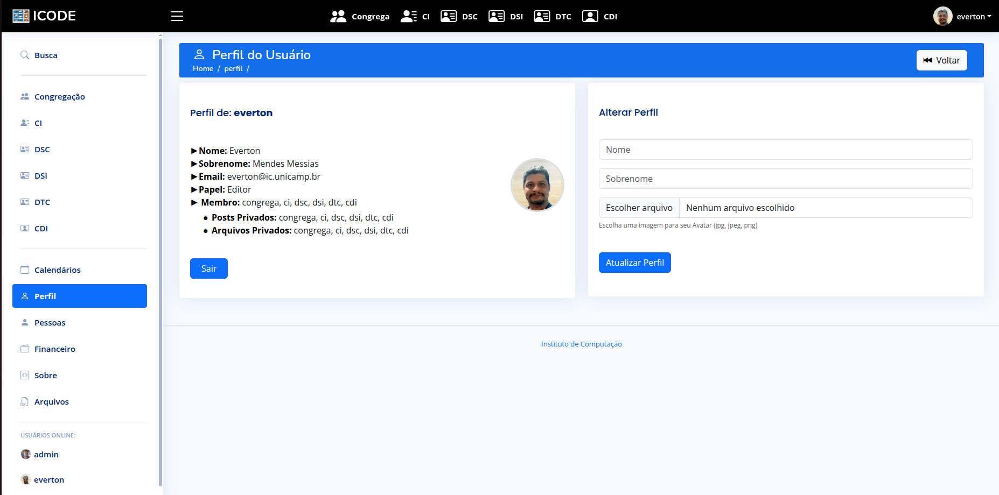
Figura 2: Página de perfil e menu lateral
Página Inicial
A página inicial do ICODE oferece o recurso de Busca Avançada, que realiza pesquisa de termos em
todos os posts e PDFs que o usuário tenha acesso, exibe também todas as últimas publicações no sistema, permitindo
que o usuário acompanhe as atualizações mais recentes, além de uma AI para interação.
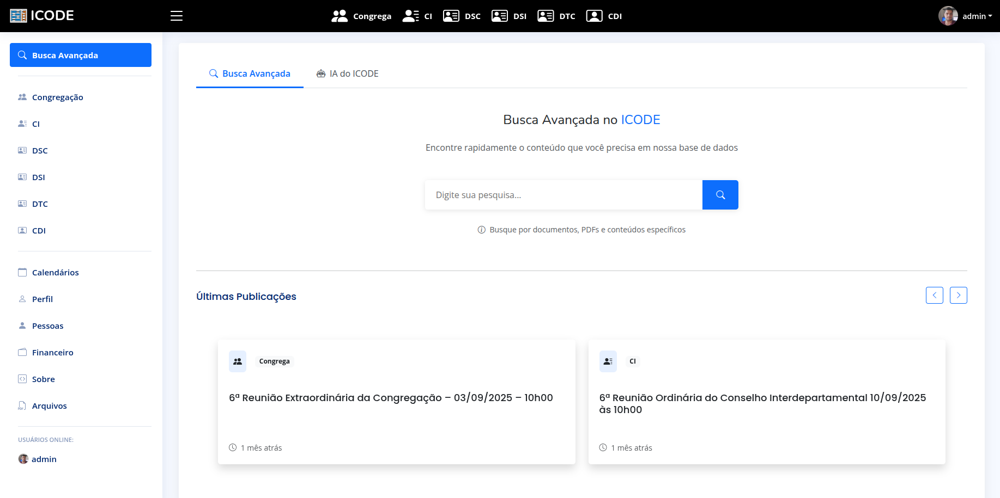
Figura 3: Recurso de Busca Avançada em todo o Sistema
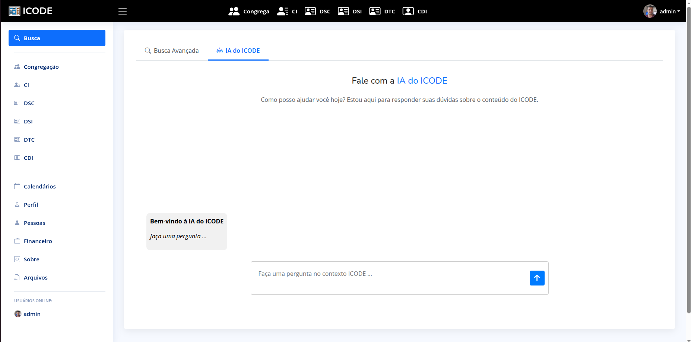
Figura 4: Recurso de Busca Avançada com IA
Calendários
No item de menu Calendários, o usuário encontra os calendários de reuniões dos colegiados, que é atualizada automaticamente via intranet.
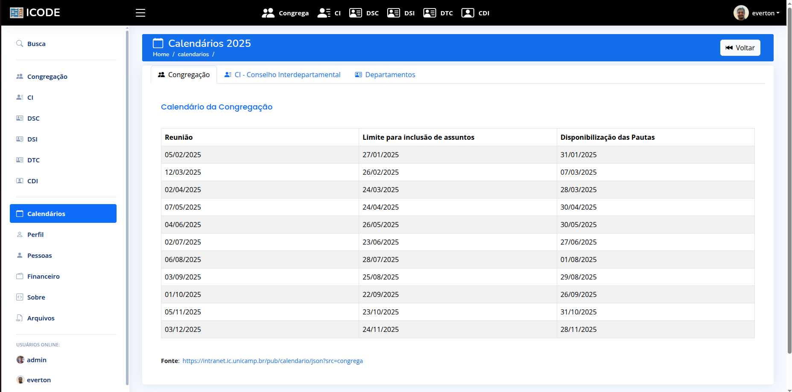
Figura 5: Calendários
Pessoas
No item de menu Pessoas, o usuário encontra a lista de docentes e funcionários do IC, que também é atualizada pela intranet.
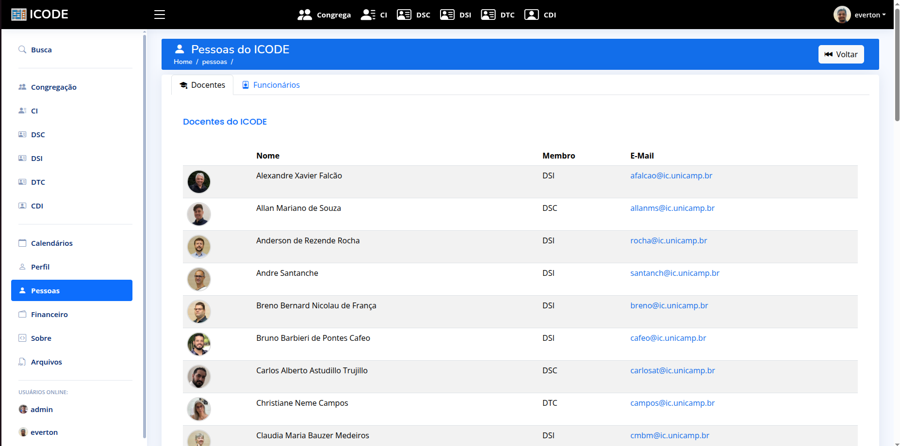
Figura 6: Lista de usuários
Financeiro
O item de menu Financeiro do menu, são exibidos os dados EDAT..
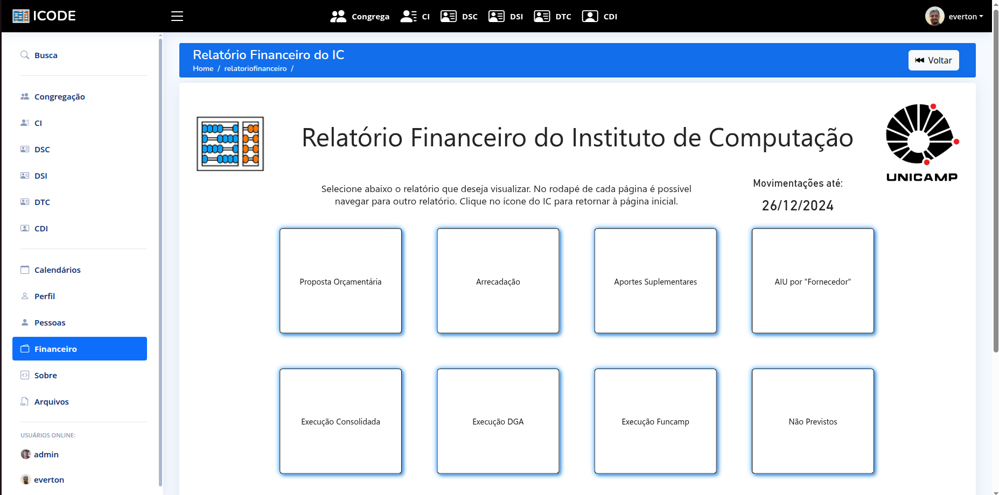
Figura 7: Página Financeiro
Página Sobre
Contém informações úteis sobre o sistema ICODE:
- Este tutorial
- Projeto no GitLab
- Site do desenvolvedor
- Páginas mais acessadas
- Registro de acessos por usuário/IP (somente para editores e administradores)
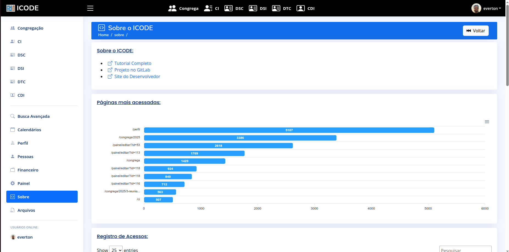
Figura 8: Página Sobre
Conteúdo dos Colegiados
Cada colegiado que o usuário tem acesso possui duas seções, organizadas em cards dentro de seu conteúdo.
1. Documentos
Mostra os documentos ordenados por ano.
2. Membros
Apresenta os membros do colegiado.
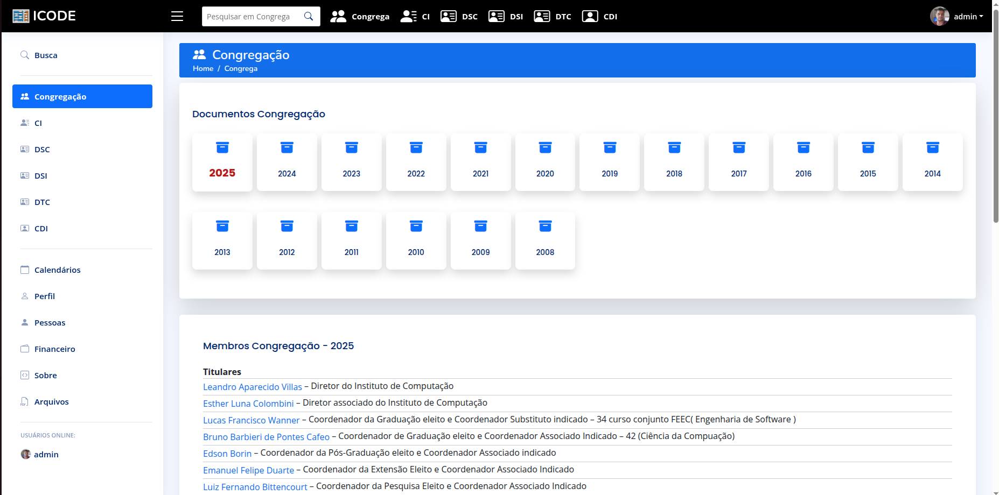
Figura 9: Estrutura de conteúdo dos colegiados
Navegando pelos Documentos
Ao selecionar um ano específico, o usuário visualizará todas as publicações daquele período, organizadas em:
- Título da Reunião: Link para a publicação (post)
- Anexos: Link para o diretório dos arquivos da reunião no servidor
- Data: Quando a reunião foi realizada
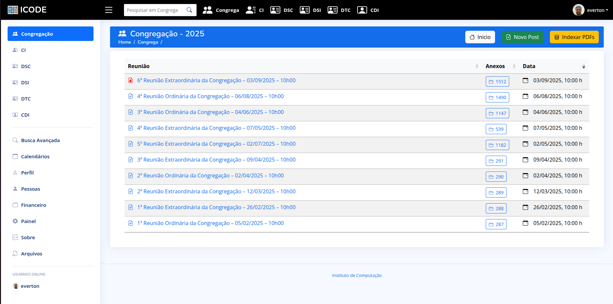
Figura 10: Visualização de documentos por ano
Observação: Editores e Administradores também verão Post Privados e os botões
'Novo Post' e 'Indexar PDFs'.
Detalhes da Reunião
Ao clicar em qualquer link de reunião, o post completo será exibido, contendo:
- Título
- Data de realização
- Membros
- Conteúdo descritivo
- Anexos, organizados em:
- Pautas (público)
- Deliberações (público)
- Ata (público)
- Itens (privado) [necessário permissão especial para visualizar]
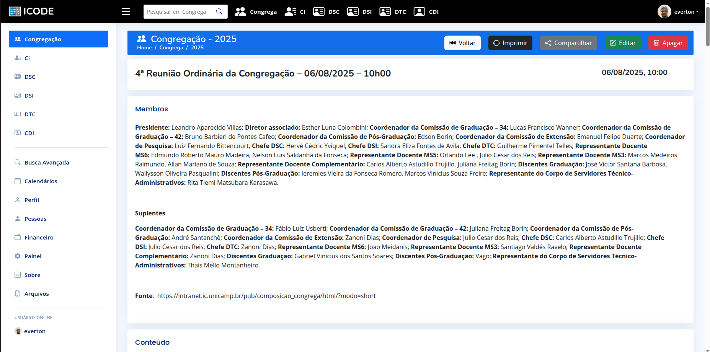
Figura 11: Detalhes de uma reunião
Observação: Editores e Administradores visualizarão também os botões
'Compartilhar', 'Editar' e
'Apagar', para gerenciamento do conteúdo.
Navegação por Diretórios
Nesta nova versão do ICODE, além de visualizar os anexos no post, o usuário também pode:
- Acessar os arquivos diretamente nos seus respectivos diretórios
- Abrir os documentos para leitura
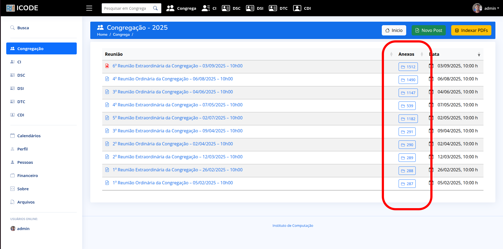
Figura 12: Navegação por Diretórios
Migração Completa
TODOS os documentos antigos de anos anteriores foram migrados para o Novo ICODE.
Agora o usuário tem a liberdade para acessar qualquer arquivo histórico sem a necessidade de
contatar a
equipe de TI.
Os arquivos estão organizados na estrutura: /tipo/ano/post_id/
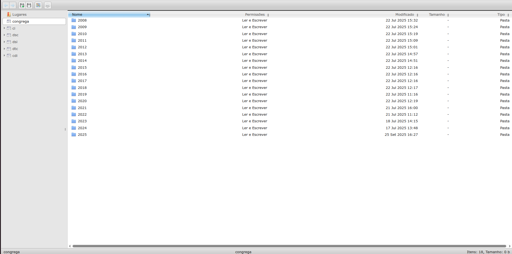
Figura 13: Histórico de Arquivos
Criar/Editar Posts
Criar ou editar um post no ICODE é um processo simples e intuitivo:
- Clique no botão 'Novo Post' ou 'Editar' (disponível para Editores e Administradores)
- Preencha os campos solicitados
- Título
- Data
- Privado (Se o post é Privado)
- Link Permanente (preenchimento automático baseado no Título, porém editável)
- Membros (preenchidos automaticamente via Intranet, porém editável)
- Conteúdo da Reunião (editável com CKeditor)
- Salve o post
- Após salvar, o usuário poderá fazer upload dos anexos
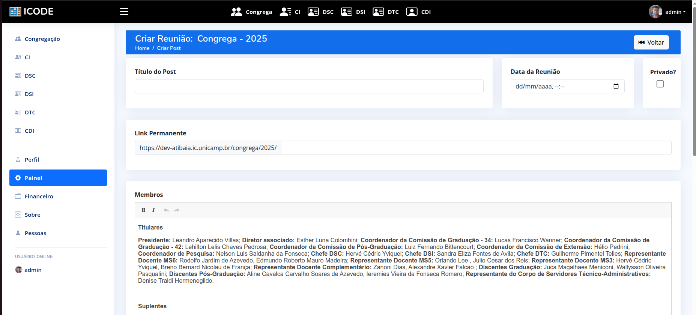
Figura 14: Criação de um novo post
Upload de Anexos
Agora o ICODE conta com um potente gerenciador de arquivos: o elFinder
O elFinder é um gerenciador de arquivos open-source baseado em navegador, desenvolvido em
JavaScript com jQuery, que fornece uma interface semelhante à de sistemas operacionais para
manipulação
de arquivos e diretórios. Inspirado no Finder do macOS, o elFinder permite aos usuários realizar
operações comuns como upload, download, copiar, mover, renomear, excluir e pré-visualizar
arquivos, tudo de forma interativa e intuitiva.
Para enviar anexos:
- Clique no botão 'Floppy'
- Selecione arquivos para Upload
- Clique em Abrir/Enviar
Organização
O sistema de arquivos está organizado seguindo a estrutura:
/ tipo / ano / id do post / subdiretorio / documento.pdf
Onde tipo pode ser congrega, ci, dsc, dsi, dtc ou cdi e subdiretorio pode ser
ata, deliberacoes, pautas ou privado.
Esta abordagem elimina completamente problemas de links quebrados,
pois cada post é "dono" de um único diretório exclusivo, identificado pelo seu id.
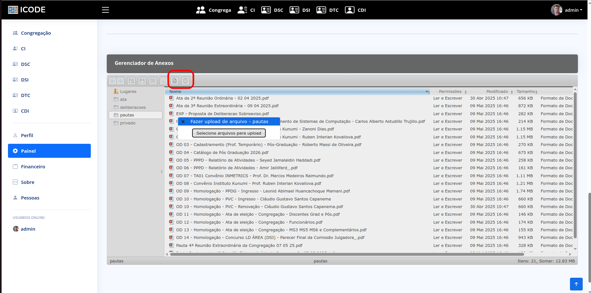
Figura 15: Upload de anexos
Inclusão de PDFs no Post
No Editor do ICODE agora existe o recurso de Inclusão de PDFs no Conteúdo, para isso clique
no botão Inserir PDF no Post, escolha o arquivo e dê
duplo clique para inseri-lo no texto.
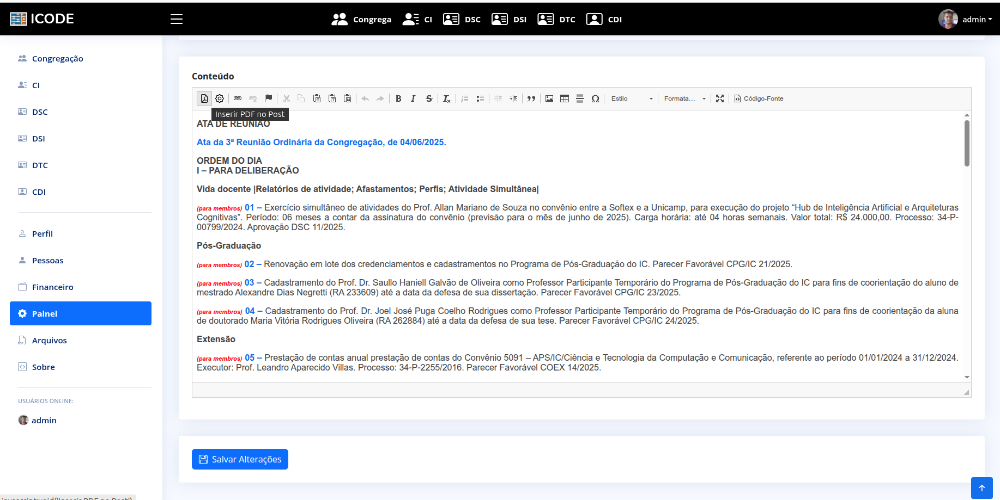
Figura 16: Inclusão de PDFs no Post
Exportação de PDF
Junção e Exportação de documentos: Selecione os documentos que deseja unir e clique no
botão Juntar PDFs, o arquivo resultante
é salvo no subdiretório 'privado'.
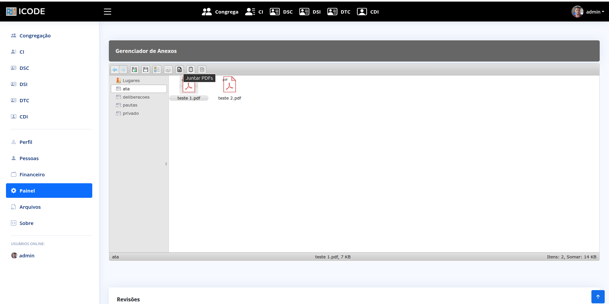
Figura 17: Exportação de anexos
Indexação no Banco de Dados
O ICODE agora possui um sistema próprio de Indexação de PDFs, totalmente integrado ao sistema.
Isso significa que não é mais necessário o uso do plugin "WP Fulltext Search Pro", garantindo mais estabilidade e desempenho.
A indexação serve para que o conteúdo dos PDFs seja convertido em texto e armazenado no banco de dados.
Dessa forma, o sistema de busca e a IA do ICODE conseguem encontrar informações dentro dos arquivos PDF.
O processo é opcional e pode ser feito a qualquer momento — durante a criação dos posts ou periodicamente (por mês ou por ano).
Para fazer a indexação, clique no botão amarelo Indexar PDFs ou, no gerenciador de arquivos elFinder,
selecione os documentos desejados e clique no ícone Indexar PDFs.
Os arquivos serão processados automaticamente pelo conversor pdf2txt, e o texto extraído ficará disponível para busca no sistema e na IA.
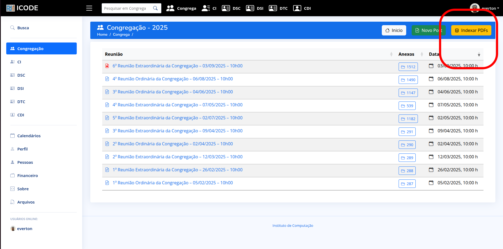
Figura 18: Indexação de todos os anexos do ano
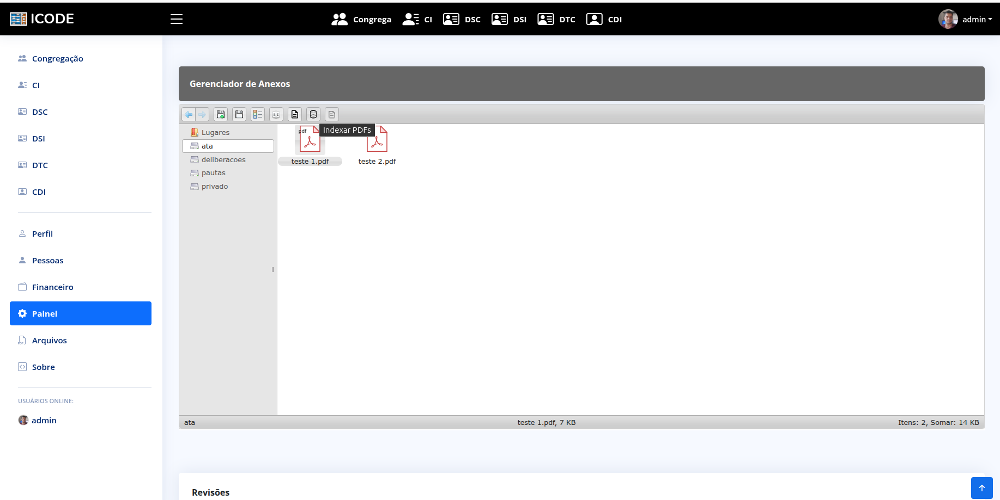
Figura 19: Indexação de anexos individualmente
Conversão DOC 2 PDF
O ICODE agora também conta com a Conversão de Documentos para PDFs.
Selecione os documentos que deseja converter e clique no botão
Converter Word para PDF, os arquivo serão convertidos
e salvos no diretório 'privados'.
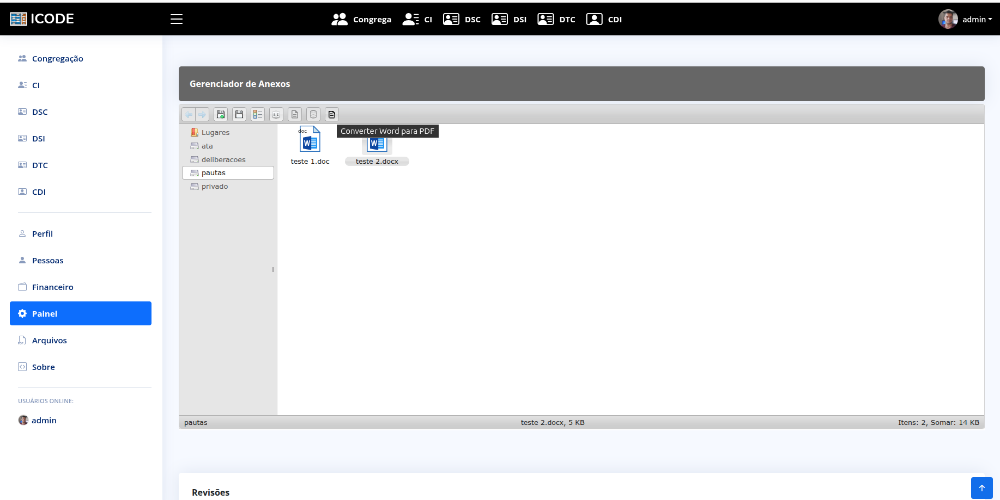
Figura 20: Conversão de anexos
Correção de Links no Post
Ao mover arquivos de um diretório para outro é necessário refazer os links dos anexos no post, para
isso o ICODE traz
uma nova função: Correção de links; clique no botão Corrigir links de
arquivos,
os links de anexos no corpo do Post serão corrigidos automaticamente.
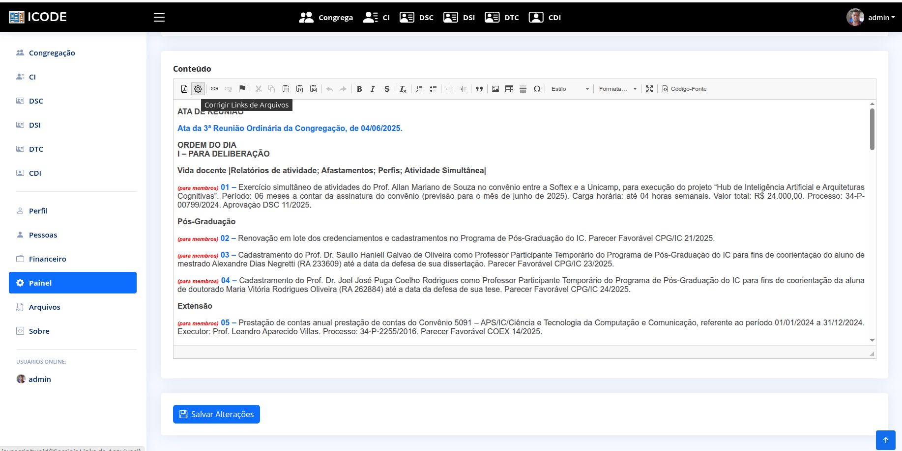
Figura 21: Corrigindo links de arquivos
Compartilhar Reunião
Nesta nova versão do ICODE o usuário editor ou administrador pode compartilhar a reunião por e-mail.
- Preencha os campos necessários para enviar o e-mail.
- Edite o campo Descrição conforme necessidade.
- Clique em Enviar.
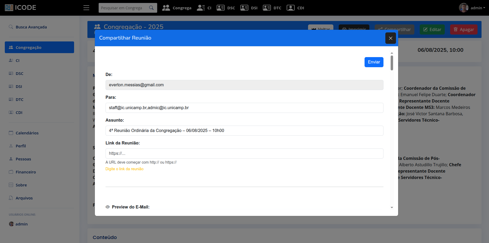
Figura 22: Compartilhar Reunião
Suporte
Em caso de dúvidas ou problemas, entre em contato com o suporte através do e-mail:
suporte@ic.unicamp.br